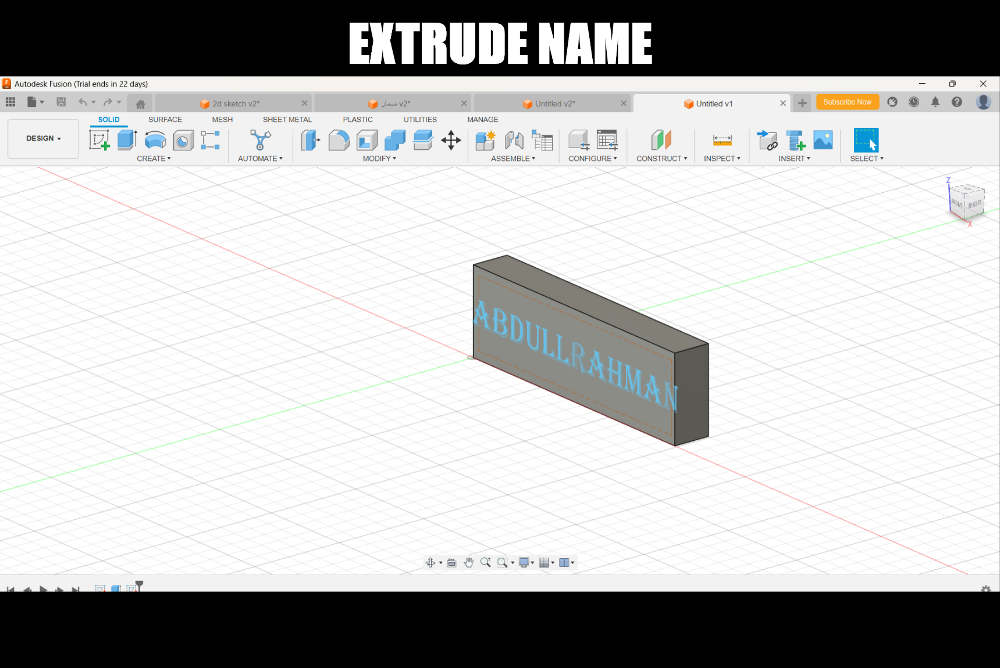

CAD (Computer-Aided Design) is the use of computer software to assist in the creation, modification, analysis, and optimization of a design. CAD allows engineers, architects, and designers to create precise drawings, 3D models, and simulations to visualize concepts in both 2D and 3D. This technology is used across many industries, such as architecture, engineering, automotive, and entertainment.
The use of CAD provides several benefits including improved design quality, precision, faster production, and collaboration among teams. CAD is also crucial for creating prototypes, analyzing materials, and simulating real-world conditions before production.
Fusion 360, developed by Autodesk, is a cloud-based CAD, CAM (Computer-Aided Manufacturing), and CAE (Computer-Aided Engineering) tool that supports the entire product development process. Fusion 360 combines design, engineering, and manufacturing into a single software platform, making it a versatile tool for both beginners and professionals. It allows users to work collaboratively in real-time.
I started learning CAD using Fusion 360. This software includes capabilities for parametric modeling, freeform modeling, mesh editing, and direct modeling, which provides flexibility in product design. It is used extensively in industries such as automotive, aerospace, and industrial design.

The interface of Fusion 360 is clean, organized, and visually appealing. For someone new to CAD, it can be slightly challenging at first. However, I quickly adapted to its basic tools and started designing simple 3D shapes. My initial tasks involved learning the basics of the toolbar, drawing tools, and creating simple designs like extrude and revolve.
The software allows for a high level of precision and customization in 3D modeling. With the help of my instructor and classmates, I was able to overcome initial difficulties and began to enjoy working with the software. Below are some examples of the tasks I completed.
My first task was to create a simple 3D shape using the revolve tool, where I sketched a profile and rotated it around an axis to form a solid object. Below is an image of my first attempt:

After learning the revolve tool, I moved on to more complex designs, experimenting with extrude, loft, and offset tools. Below are a few images showcasing the tasks I completed:



During this week, we focused on exploring both 2D and 3D design elements in Fusion 360, with a particular focus on the extrude and revolve tools. While the learning process was initially challenging, I gradually gained confidence in using the software. Thanks to my instructor and my peers, I was able to overcome the obstacles I encountered.
We also delved into CAM (Computer-Aided Manufacturing) features within Fusion 360. CAM allows you to generate toolpaths, simulate CNC machining operations, and export the design for manufacturing. This helps bridge the gap between design and production.
Learning CAD with Fusion 360 has been a rewarding experience. Although it was challenging at first, the satisfaction of completing complex designs makes the effort worth it. I look forward to further improving my skills and exploring more advanced features such as parametric design, rendering, and simulation.
You can download my files here for my project on fusion-360: